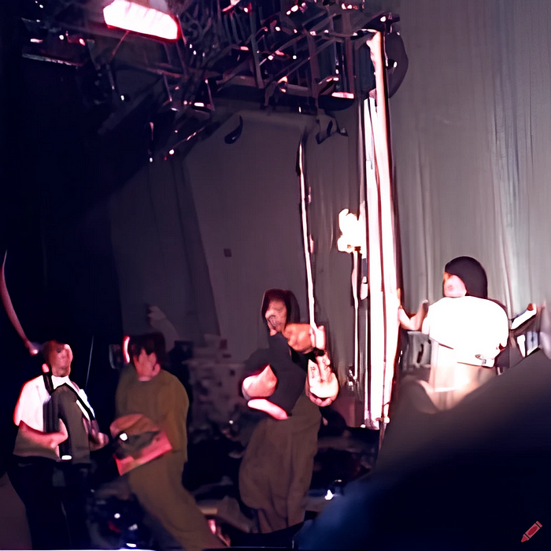

Die Nerd Enzyklopädie 17 - Fuenf — In your Face
“Fuenf — In your Face” ist der Name eines Werkes von Farbrausch, einer Gruppe aus der Demo Szene, die laut pouet.net seit 2000 aktiv ist [POUE1].
Aber was ist die Demo-Szene? Dieser Begriff beschreibt eine der ältesten Communities des digitalen Zeitalters. Demos sind musikalisch untermalte und animierte Grafiken, die die technischen und kreativen Fähigkeiten einer Gruppe zur Schau stellen — also demonstrieren — sollen. Eine Art digitales audiovisuelles Aushängeschild.

Die Demo-Szene ist auch eng vernüpft mit der “Warez-Szene”, Warez steht für Raubkopien. Raubkopien waren schon immer ein Problem, erst Recht um 1980 herum. Damals wie auch heute erforderte das Anfertigen einer Raubkopie ein gewisses technisches Verständnis, um den Kopierschutz mit mal mehr mal weniger Aufwand zu umgehen. Dieser Vorgang wird als „cracken“ bezeichnet, also „aufbrechen“.
Die Gruppen, die für die Raubkopie verantwortlich waren, versahen gecrackte Software mit einem Intro, das beim Start der Software angezeigt wurde. Das waren in der Regel digitale Musik-Videos, die den Namen der Cracker-Gruppe kunstvoll in Szene setzen sollen. Diese Intros wurden anfangs Cracktros genannt.
Mit der Zeit wurde dem Erstellen der Cracktros mehr Bedeutung beigemessen, wohl auch weil es oft aufwendiger war, beeindruckende Cracktros mit geringem Speicherbedarf zu produzieren, als den Kopierschutz zu umgehen. Diese Visitenkarte musste ja mit dem Spiel ausgeliefert und irgendwie auf den Datenträger gequetscht werden. Speicherplatz war damals eine wertvolle Ressource. Auf einer 1,44 MByte-Diskette, die ein komplettes Spiel enthielt, gab es eigentlich keinen Platz für aufwendige Animationen.
Aus dem Cracktros wurden schließlich Demos, die auf speziellen Demo-Disks verteilt wurden. Aus der Not wurde eine Tugend und schließlich der Wettbewerb, mit möglichst wenig Code beeindruckende Animationen zu erschaffen.
Die Demo-Szene war geboren und nabelte sich recht schnell von ihrem bösen Geschwister, der Raubkopierer-Szene, ab. Eine dieser Gruppen war die aus Deutschland stammende Gruppe Farbrausch. Seit 2000 liefert Farbrausch recht ansehnliche Werke ab, fuenf (in your face) gehört vermutlich eher nicht dazu und ist vielmehr einer der ersten klassischen Troll-Versuche des Internets: Es handelt sich dabei um ein 5 Byte große Demo vom 29. Dezember 2001, von der man zunächst großes erwartet.
Letztlich handelt es sich aber nur um ziemlich anstrengende Störgeräusche, die sogar dazu führen konnten, dass der Computer nicht mehr auf Eingaben reagieren. Farbrausch verstand dieses “Werk” als Antwort auf eine ähnliche Produktion der Demogruppe TEXTEM, die nur 6 Byte groß war.
Das sind die 5 Byte, mit denen Farbrausch vermutlich für die eine oder andere akustische Irritation sorgte:
95 cd 21 eb fc